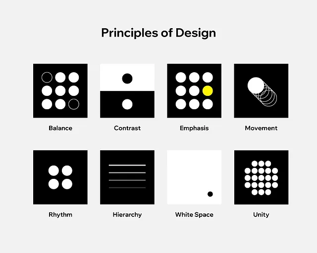
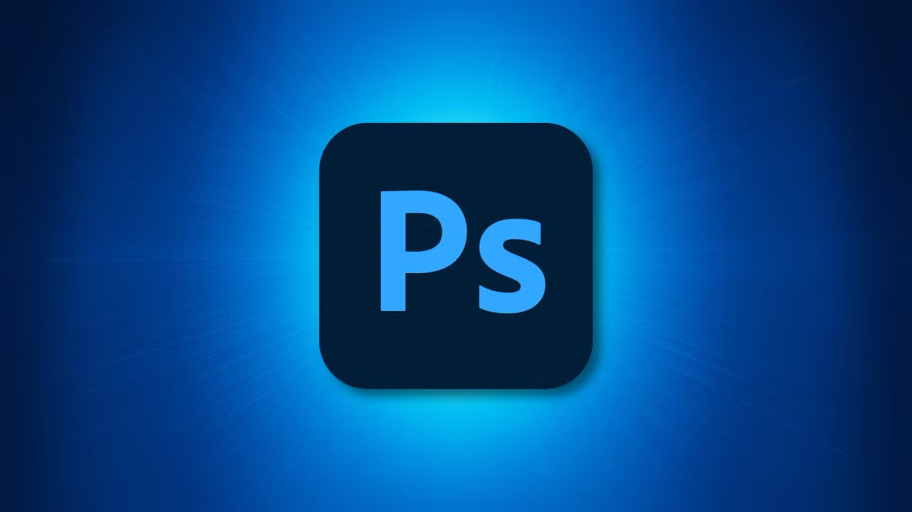
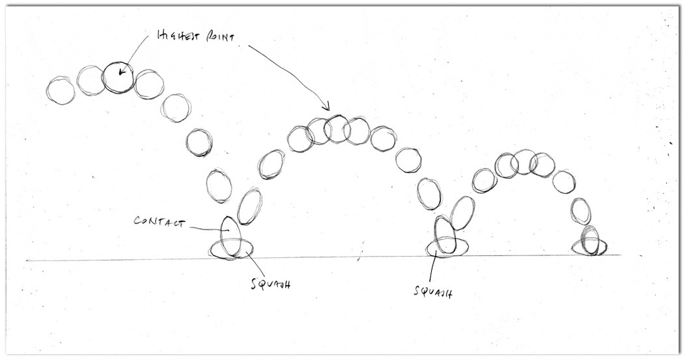

best of
These are my favorite pieces from this year! (you may see these pop up in other sections too)
Learn moreThis section is just going to be me ranting about photoshop and how much i enjoyed the program this past year!
Learn moreThese are the actual collections of works that I've done this year, they are separated by what class they were for as well as just some of my favorite pieces. Enjoy!!!
These are my favorite pieces from this year! (you may see these pop up in other sections too)
Learn more
This section is all of the pieces I created for Arts 102, this class focused on basic design concepts!
Learn more
This section houses my work from Arts 171, this class focused on working in photoshop with all of its tools!
Learn more
These are just some little animations that we worked on for a few weeks towards the end of the year!
Learn more